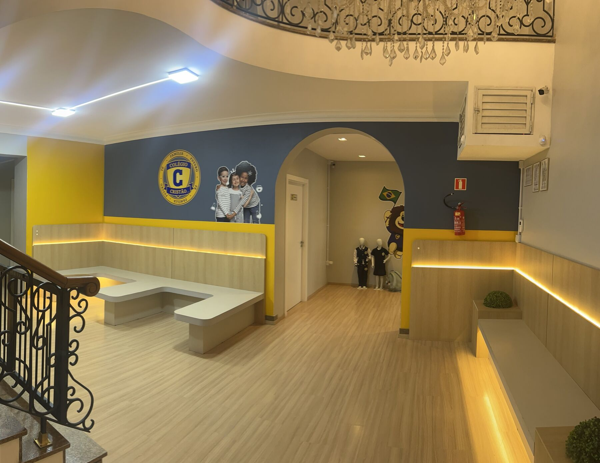
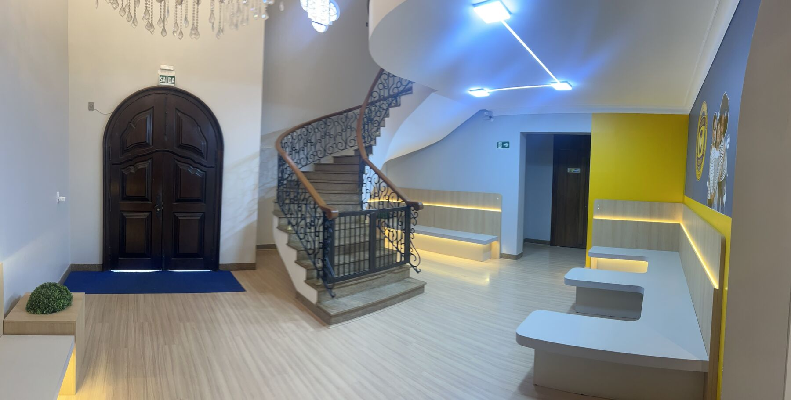
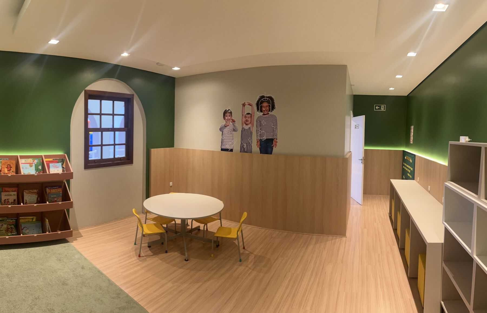
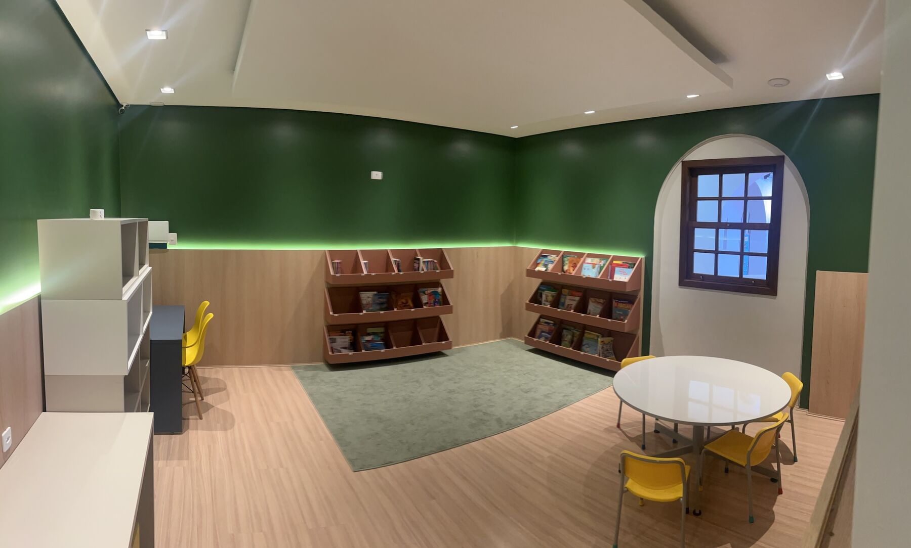
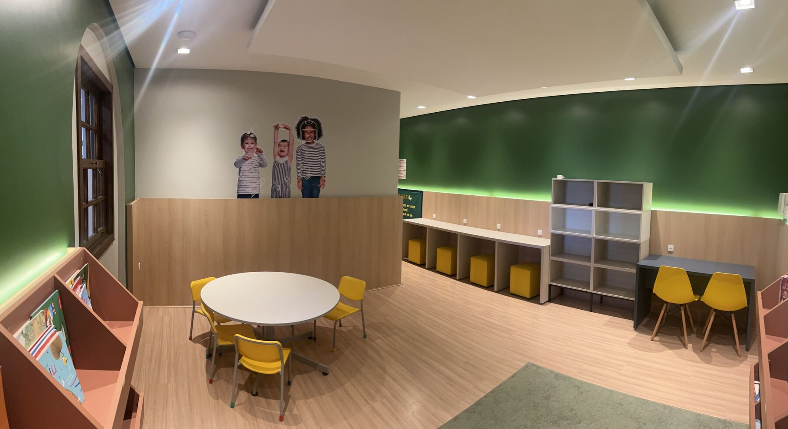

Role a página para caminhar pelo hall de entrada e pela biblioteca.
Role para começar ↓
Bancos de apoio, o mural da escola e os uniformes em exposição logo na chegada.

A escadaria de ferro forjado e a porta de entrada, que dá acesso ao restante do prédio.

Estantes com livros infantis, mesas redondas e cadeiras coloridas para as crianças.

Um tapete para sentar e ler, com estantes de livros ao redor e uma janela em arco.

Mesas, prateleiras e um canto para estudar com calma, em grupo ou sozinho.